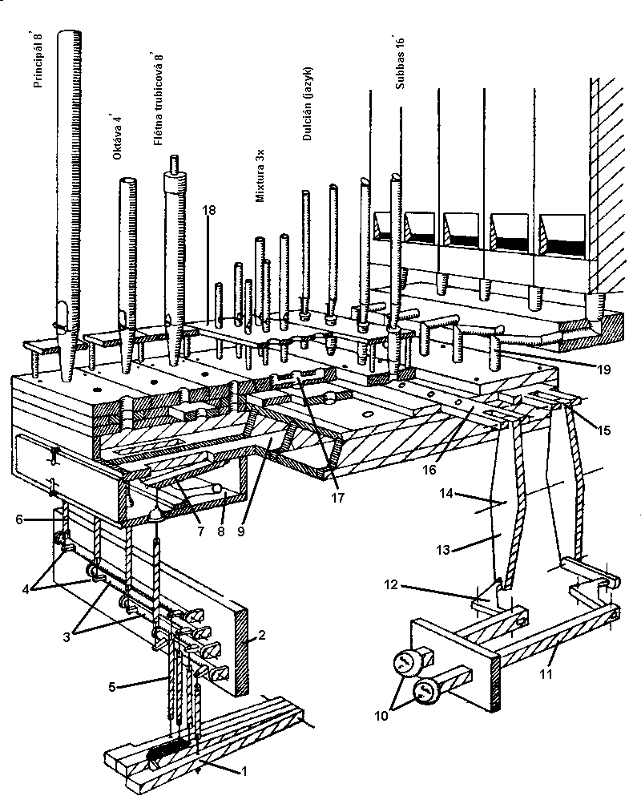

Mechanická traktura varhan je dvojího druhu: hrací
- tónová, pøenášející
stisk klávesy manuálu èi pedálu na ventil ve vzdušnici a rejstøíková
- pøenášející pohyb ovládacích rukojetí a pák na rejstøíkové ventily èi
zásuvky. Souèástí traktury jsou i pomocná zaøízení (spojky).
Mechanická traktura je slo�ena z celé øady mechanickıch
komponentù na principu pák, táhel a høídelù. |

|
Øez varhanami s mechanickou trakturou a zásuvkovou vzdušnicí. Legenda: 1- klávesa, 2- høídelová deska, 3- høídel, 4- raménka, 5, 6- abstrakty, 7- tónovı ventil, 8- ventilová komora, 9- tónová kancela, 10- rejstøíkové rukojeti, 11-rejstøíkové táhlo, 12- úhelník, 13- dvouramenná páka, 14- osa páky, 15- spojení páky se zásuvkou, 16- rejstøíková zásuvka, 17-píš�alnice, 18- lavièka, 19- kondukt |
Na dalších stránkach jsou popsány komponenty mechanické traktury, tónová traktura, rejstøíková traktura, a spojky. |
Poznámka: Tato stránka je souèástí Anatomie varhan ®, © Ing. Petr Bernat. Všechny animace © Konrad Zacharski